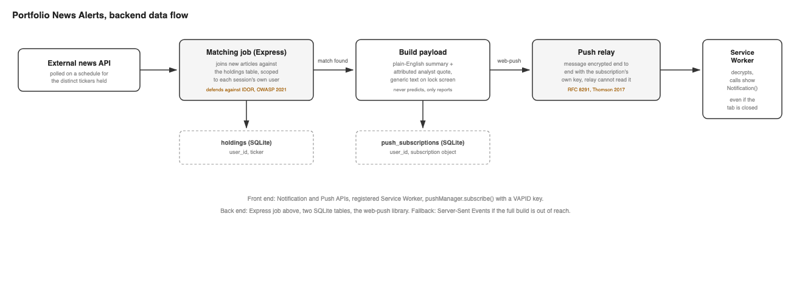
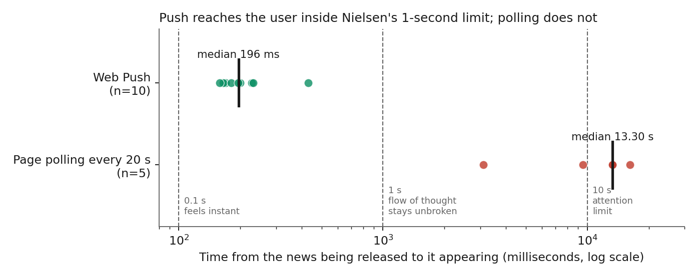
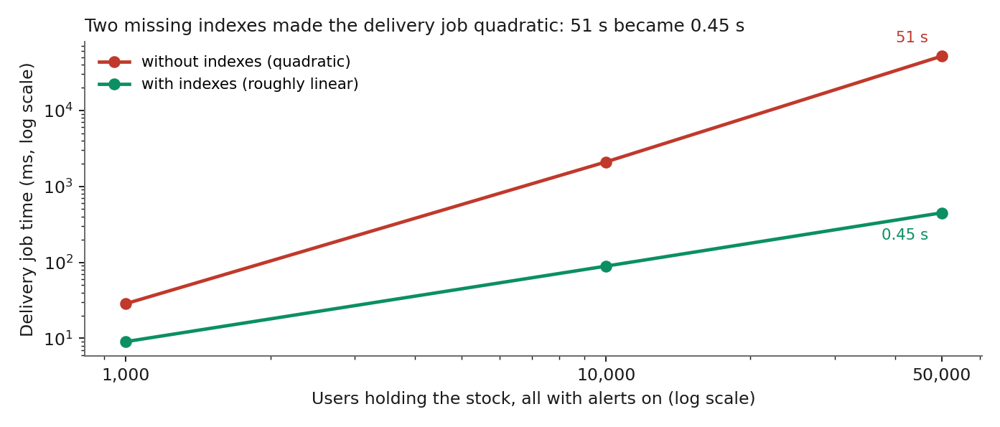
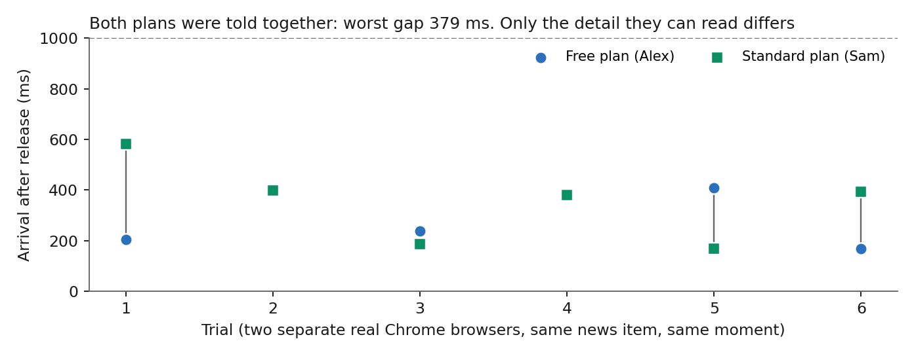

Portfolio News Alerts tells a signed-in user, the moment news breaks about a stock they hold, with a browser notification. It works with every StockWise tab closed. This page explains how it is built, file by file, so you can build something similar. The feature was proposed in Task 7.3HD and implemented for Task 10.3HD. You can try it on My alerts.
The shape of it
Three browser features make an instant, tab-closed notification possible, and each does one job.
| API | Job |
|---|---|
| Notifications API | Asks the user's permission, and shows the alert on the device. |
| Service Worker | A background script the browser can start even when no tab is open. It receives the push and shows the notification. |
| Push API | Subscribes this browser to the browser vendor's push service, which gives the server an address it can send to. |

The files
| File | Role |
|---|---|
lib/alerts-db.js | Tables, plan limits, sample data, and every query. Each one takes the user id as an argument and puts it in the WHERE clause. |
lib/alerts.js | The logic without Express: building the notification payload, shaping news by plan, releasing news, the delivery job, VAPID keys. |
lib/alerts-routes.js | The HTTP API (an Express router). Gets the user from the session, never from the request. |
public/sw.js | The service worker: push and notificationclick handlers. |
public/alerts.html, public/js/alerts.js | The page: permissions, the state machine, holdings, the Account & Privacy table, the in-app list. |
public/news.html, public/js/news.js | The page a notification opens. Plan-shaped explanation. |
test/alerts.test.js | Tests for the claims on this page. 72 tests across the project; the experiments are in test/experiments/. |
Build it, step by step
1. Make a VAPID key pair and keep the private half private
VAPID keys identify your server to the push service. The private key can send to every subscribed device, so it lives in a git-ignored file (or an environment variable) and is never sent to the browser or logged. Only the public key is served, because the browser needs it to subscribe.
const keys = webpush.generateVAPIDKeys();
fs.writeFileSync('vapid-keys.json', JSON.stringify(keys), { mode: 0o600 });
webpush.setVapidDetails('mailto:you@example.com', keys.publicKey, keys.privateKey);2. Create the tables
Two tables carry the feature. holdings says who holds what, and
push_subscriptions holds one row per browser the user turned alerts on for.
alert_prefs stores the user's intent separately, because whether a
notification can really be shown also depends on the browser's own permission (step 6).
CREATE TABLE holdings (
id INTEGER PRIMARY KEY AUTOINCREMENT,
user_id INTEGER NOT NULL REFERENCES users(id) ON DELETE CASCADE,
ticker TEXT NOT NULL,
UNIQUE (user_id, ticker)
);
CREATE TABLE push_subscriptions (
id INTEGER PRIMARY KEY AUTOINCREMENT,
user_id INTEGER NOT NULL REFERENCES users(id) ON DELETE CASCADE,
endpoint TEXT NOT NULL UNIQUE,
p256dh TEXT NOT NULL,
auth TEXT NOT NULL
);3. Register the service worker
Serve the worker from the site root (/sw.js) so its scope covers the whole site.
Register it once the page loads, and treat a failure as "this browser cannot do push", not as an
error: the in-app list still works.
swRegistration = await navigator.serviceWorker.register('/sw.js');
await navigator.serviceWorker.ready;4. Ask for permission from a click, then subscribe
Browsers only show the permission prompt for something the user just did, and Chrome quietly downgrades prompts fired without a user action. So the request sits directly inside the checkbox's change handler, on the page where the user can see why it is being asked, not at registration.
permission = await Notification.requestPermission(); // the browser's own prompt
const sub = await swRegistration.pushManager.subscribe({
userVisibleOnly: true, // every push must show a notification
applicationServerKey: urlBase64ToUint8Array(publicKey)
});
await api('POST', '/api/push/subscribe', sub.toJSON()); // the server stores it5. Store the subscription, scoped to the session
The server validates the endpoint (it must be an https URL) and the two keys, then saves it for the user who is signed in. The user id comes from the session cookie, never from the request body, so a request cannot be pointed at someone else's account.
function requireUser(req, res, next) {
const token = readCookie(req, SESSION_COOKIE);
const user = token ? store.getUser(db, sessions.get(token)) : undefined;
if (!user) return fail(res, 401, 'Please sign in first.');
req.user = user; // from the session, never from the request
next();
}6. Treat the browser permission as live, and keep intent separate
The user can change the browser's notification permission in its own settings at any time, outside
your page. So the page reads Notification.permission fresh each time and combines it with
the stored intent. A denied permission cannot be re-requested from JavaScript, so it needs its own
calm, permanent explanation rather than a repeating prompt.
| State | Stored intent | Browser permission | What the page shows |
|---|---|---|---|
| Off | off | any | "Alerts are off." |
| Active | on | granted, and subscribed | Success message; the box is ticked. |
| Blocked | on | denied | Box unticked, with an explanation of how to allow it in browser settings. |
| Failed | on | granted, subscribe failed | "That is on our side", with a Try again button. |
| Needs permission | on | not yet asked | Prompts the user to tick the box. |
| Unsupported | on | no push in this browser | In-app list only. |
7. Receive the push in the service worker
The worker displays whatever it is sent. It adds nothing, which is what lets the server decide, in one place, what a lock screen may show.
self.addEventListener('push', function (event) {
var data = event.data ? event.data.json() : {};
event.waitUntil(
self.registration.showNotification(data.title || 'StockWise', {
body: data.body || "There's news about one of your holdings.",
tag: data.tag, // same tag replaces, not stacks
data: { newsId: data.newsId } // an opaque id for the click handler
})
);
});8. Build the payload on the server: generic by default
A lock screen can be read by anyone nearby with no sign-in. So by default the payload names nothing. Only a user who ticked "Show the holding's name on my lock screen" gets the specific text, and even then only the headline, never the plan-gated explanation.
function buildPushPayload(prefs, newsItem) {
const specific = prefs.showOnLockScreen === true;
return {
title: 'StockWise',
body: specific ? `${newsItem.ticker}: ${newsItem.headline}` : GENERIC_BODY,
newsId: newsItem.id,
tag: `stockwise-news-${newsItem.id}`
};
}9. The delivery job: match, send, clean up
For one news item, find every user who holds the ticker, has "notify immediately" on, and has at least
one subscription, and send each of their devices the payload that user's own choices allow. A
deliveries table makes it safe to run twice. If the push service answers 404 or 410, that
subscription is gone (the user cleared site data or revoked permission), so the row is deleted.
await send({ endpoint, keys: { p256dh, auth } }, payload); // web-push, in production
...
if (err.statusCode === 404 || err.statusCode === 410) {
db.prepare('DELETE FROM push_subscriptions WHERE endpoint = ?').run(endpoint);
}10. Keep the dependent checkbox reachable
"Show the name on my lock screen" means nothing unless alerts are on. A native
disabled checkbox would vanish from the Tab order, so a keyboard or screen reader user
would never find it or learn why it is inert. Use aria-disabled, cancel the click, and
explain it in the helper text linked with aria-describedby. The stored value is kept
while it is inert, so turning alerts back on restores the earlier choice.
lock.setAttribute('aria-disabled', lockAvailable ? 'false' : 'true');
lock.addEventListener('click', function (event) {
if (lock.getAttribute('aria-disabled') === 'true') event.preventDefault();
});11. Let the plan change depth, never speed
The push goes to every plan at the same moment. What differs is what /api/news/:id
returns when the user opens it: Free gets the short summary; Standard and Full get the fuller
explanation and one named analyst's reported words, with its source. StockWise never averages or
scores analyst views, and never forecasts.
Security and privacy decisions
| Risk | What was done | Where |
|---|---|---|
| A leaked push subscription plus the private key could be used to send convincing fake alerts. | The private key stays in a git-ignored file and is never sent or logged. Only the public key is served. | loadVapidKeys |
| One user reading another's holdings or subscriptions (an insecure direct object reference). | The user comes from the session only. Every query is keyed by it. News is joined to the user's own holdings. | requireUser, lib/alerts-db.js |
| A lock screen exposing a portfolio. | The payload is generic unless the user opted in. | buildPushPayload |
| A stored push channel outliving the user's choice. | Turning alerts off deletes the subscription on the server too. "Delete my alert data" removes preferences and all subscriptions. | PUT /api/alerts/prefs, DELETE /api/alerts |
| The browser can see stored data it should not trust. | Values from the server are written with textContent, and analyst links are only followed if they are https. | alerts.js, news.js |
Web Push payloads are also encrypted end to end between the server and the browser (RFC 8291), so the push service that carries the message cannot read it. That leaves two places to protect: what is stored in your database, and what is shown on the device.
What is real and what is a stand-in
- Real: the permission prompt, the service worker, the push subscription with the browser vendor's push service, web-push delivery with VAPID, encrypted payloads, the notification, the session-scoped queries, deleting subscriptions, the plan-shaped explanation.
- A stand-in: the news. A production job would poll a licensed news API and insert
rows into
news_items. Here, a button releases the next sample item. All companies, tickers and analysts are invented, and nothing is real news. - A stand-in: sign-in. Two demo accounts, no passwords. The cookie is
HttpOnlyandSameSite=Lax; a real site would also use HTTPS and theSecureflag. - A limit: iOS Safari only supports web push for sites added to the home screen. Those users still see every alert in the in-app list.
- A limit: the delivery job runs when an item is released. A production version
would also run on a schedule to retry transient failures; the
deliveriestable already makes that safe. - Not automated: tapping the notification (the
notificationclickhandler) cannot be driven from a test browser. Check it by hand: tap the notification and confirm the explanation page opens.
Testing the claims: hypotheses and results
Every claim the proposal made about speed, privacy, fairness and accessibility was written as a
hypothesis a measurement could prove wrong, then tested. Where the result disagreed, the code was
changed and the test repeated. The real-browser tests drive an actual Chrome with a real push
subscription at Google's push service. Every experiment is a script in test/experiments/
you can re-run, and the charts below are drawn from the saved results by make-charts.py.
| ID | Hypothesis | Method | Result | Verdict |
|---|---|---|---|---|
| H1 | A push reaches the screen in under a second, far sooner than a page that polls every 20 s. | Real Chrome with a real push subscription. 10 push trials; 5 polling trials at random points in the cycle. | Push: median 196 ms, worst 430 ms. Polling: median 13.3 s (3.1 to 16.2 s). | Supported |
| H2 | Delivery time grows in proportion to the number of users affected. | 1,000 to 50,000 users, with and without two database indexes; 5 runs each. | Without indexes it was quadratic: 51.5 s at 50,000 users. With them: 0.45 s. | Refuted, fixed |
| H2b | Sending to several users at once removes the wait for the last user. | 1,000 users, 50 ms per push, concurrency 1 to 100. | One at a time: 51.3 s. 25 at once: 2.06 s. 100 at once: 0.53 s. | Supported |
| H3 | A long headline cannot make a push too large to send. | Pushed sizes up to 10 KB at Google's live push service. | Accepted up to 3,993 bytes, refused (HTTP 400) from 3,994, in 3 of 3 trials at each size. I predicted this edge before measuring it, as 4,096 bytes minus 103 bytes of encryption overhead (RFC 8291). The first draft reached 4,072 bytes. | Refuted, fixed |
| H4 | No request can read or change another user's data. | 33 attack variants: ids in the query, body and headers, forged cookies, other users' tickers and news. | 0 changes to the victim's data, 0 leaks in successful responses. | Supported |
| H5 | Overlapping delivery runs never send the same alert twice. | Two overlapping runs, 40 trials; then 50 overlapping runs. | First draft sent twice in 40 of 40 trials. Claim-then-send: 0 of 40. | Refuted, fixed |
| H6 | Knowing an endpoint is not enough to take over someone's push channel. | An attacker posts the victim's endpoint with their own keys. | First draft: the record was taken over, so the victim silently stops getting alerts (the push itself still goes to the victim's browser, so the attacker cannot read it). Now refused (HTTP 409) unless the secret keys match. | Refuted, fixed |
| H7 | The page never says alerts are working when they are not. | All 32 combinations of the four inputs to the state function. | No violations. 'Active' appears only when permission, subscription and intent all hold. | Supported |
| H8 | Free and Standard users are told at the same moment. | Two separate real browsers, one per plan, 6 trials. | Medians 379 ms and 393 ms; worst gap 379 ms. Only the readable detail differs. | Supported |
| H9 | The advice-language checker catches at least 80% of violations and wrongly flags at most 10%. | Three labelled sets: development, held-out, and adversarial (never used for tuning). | Held-out: 29/30 caught, 0/30 wrongly flagged. Disguised wording: 0/16 caught, 6/10 harmless sentences flagged. | Supported for direct wording, refuted for paraphrase |
| H10 | Every API call answers in under 100 ms at the 95th percentile. | 400 requests per endpoint, 20 at a time, 8 endpoints. | p95 between 3.0 and 13.6 ms (local, small data). | Supported |
| H11 | No WCAG 2.2 A or AA violations in any state. | axe-core on 8 states, including blocked and phone width. | First run: 5 violations (red button 4.26:1; nav toggle name). After fixes: 0. | Refuted, fixed |



What testing changed in the build
- Two indexes on
holdings(ticker)andpush_subscriptions(user_id): 51 s became 0.45 s at 50,000 users. The cost was not the big matching query but a per-user lookup that rescanned a table. - Claim, then send: a delivery is recorded before the push is sent, so overlapping runs cannot send twice (40 of 40 duplicates became 0 of 40).
- Bounded concurrency (25 sends at once) instead of one at a time: 51 s became 2 s for 1,000 users at 50 ms per push.
- A 120-character headline cap in lock-screen text, because Google's push service refused pushes from 3,994 bytes.
- Subscription takeover protection: an existing endpoint can only be re-assigned by someone who also holds its secret keys.
- Accessibility: a red button raised from 4.26:1 to 7.63:1 contrast, and the nav toggle's accessible name made to contain its visible text.
Where the evidence is weak
- Small samples on one machine and network, in headless Chrome: ten push trials, five polling trials, six plan pairs. They show an order of magnitude, not a precise distribution.
- The scale test used a fake sender and an in-memory database, so it does not predict a production system.
- No participants. The accessibility audit is automated (axe-core) and finds only part of the real problems; no screen reader test was run.
- The news is invented, tapping a notification is not covered by an automated test, and iOS Safari was not tested.
- The advice checker's test sentences were written by one person.
Using AI, carefully
An explanation could be drafted by a language model from the raw news. lib/explainer.js does
that, but only as a draft: its best possible result is "needs review", a person approves it, and it
is only ever sent public news text, never a user's holdings. lib/guardrail.js first rejects any
draft with advice, forecast, verdict or pressure language. The evaluation (H9) is why a person stays in the
loop: the checker caught 29 of 30 direct violations in a held-out set, but none of 16 deliberately disguised
ones, and wrongly flagged 6 of 10 harmless sentences containing words like "strong" or "upside". A keyword
filter is a first filter, not a judge. The explainer is tested with a fake model; run
test/manual/ai-explainer-live.js with your own key to see what a real model writes.
Run it and test it
npm install
npm start # http://localhost:3000/alerts.html
npm test # 72 tests across the whole project
On My alerts: choose a demo account, tick "Notify me immediately", allow
notifications when your browser asks, then press "Send me a test alert now". On macOS, Chrome must also be
allowed to show notifications in System Settings. The tests use an in-memory database and a fake push
sender, so they never touch stockwise.db or a real push service.
Sources
- RFC 8291: Message Encryption for Web Push
- W3C Push API
- WHATWG Notifications standard
- W3C Service Workers
- OWASP Top 10:2021, A01 Broken Access Control
- W3C ARIA Authoring Practices Guide
- web-push library for Node.js
- RFC 8030: Generic Event Delivery Using HTTP Push
- RFC 8292: VAPID for Web Push
- RFC 9110: HTTP Semantics
- Nielsen (1993), Response Times: The 3 Important Limits
- Franklin and Zdonik (1998), "Data in your face": Push technology in perspective
- Barber and Odean (2008), All that glitters
- Ji et al. (2023), Survey of hallucination in natural language generation
- ASIC Report 798, Beware the gap: Governance arrangements in the face of AI innovation
- axe-core accessibility testing engine